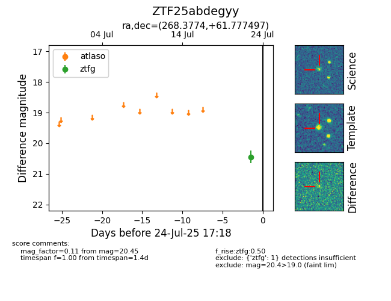

Target ZTF25abdegyy at 2025-07-24 17:18, see:
FINK: fink-portal.org/ZTF25abdegyy
Lasair: lasair-ztf.lsst.ac.uk/objects/ZTF25abdegyy
ALeRCE: alerce.online/object/ZTF25abdegyy
alt names
ZTF25abdegyy (ztf,fink)
coordinates:
equatorial (ra, dec) = (268.3774,+61.77750)
galactic (l, b) = (90.8443,+30.46596)
photometry
last ztfg=20.45
1 ztfg detections
